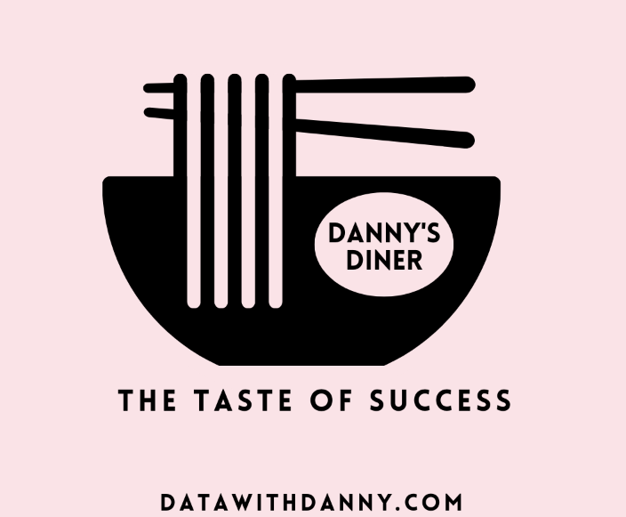

In today's data-driven business landscape, understanding your customers is paramount.
To gain valuable insights into customer behavior, we embarked on an RFM analysis journey.
In this project, we will explore the world of RFM analysis, its significance, and how it can be applied to improve decision-making.


The main of this project is to use Market Basket Analysis to understand customer purchasing behaviour so as improve customer experience whilst improve sales and profit.
The aim of the project is to performing exploration analysis to gain insights into Istanbul's Customers and Product.

This project centers on leveraging SQL queries to analyze customer data from sales, menu, and members datasets at Danny's Diner. The objective is to uncover customer visiting patterns, expenditure, and menu preferences. Insights gained will aid Danny in enhancing personalized experiences for loyal customers and deciding on potential expansions to the loyalty program. Additionally, we'll generate user-friendly datasets for team inspection. By extracting key information, Danny aims to optimize restaurant operations, foster customer loyalty, and elevate overall dining satisfaction at Danny's Diner.

Exciting Visualizattions and Dashboard Projects.